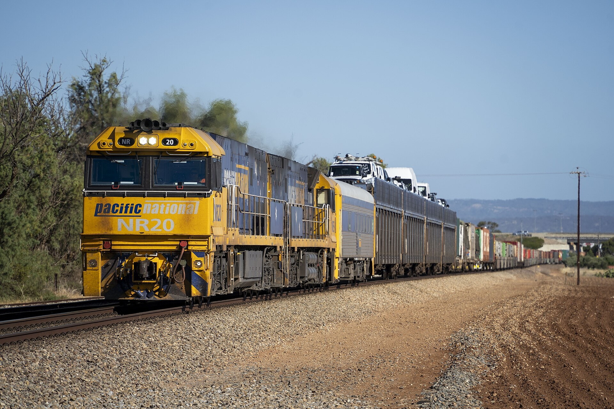

The deportation of the North Caucasus peoples to Central Asia (1943–1944): Karachays, Chechens, Ingush and Balkars
During the Second World War, Stalin's regime deported whole peoples of the North Caucasus — Karachays, Chechens, Ingush and Balkars — in railway wagons to Kazakhstan, Kyrgyzstan and, in part, Uzbekistan. This fact-based historical reference sets out the dates, numbers and the 1957 rehabilitation.

In 1943–1944, at the height of the Second World War, on the orders of Soviet leader Joseph Stalin and People's Commissar for Internal Affairs Lavrentiy Beria, several peoples of the North Caucasus were expelled wholesale from their homeland — collectively accused of "treason" to the enemy. The operations were carried out by the NKVD; within a few hours people were loaded into freight wagons and sent thousands of kilometers away to Central Asia and Kazakhstan. (Source: Communist Crimes — The Mass Deportation of the Ingush People.)
The Karachays (2 November 1943)
The Karachay people were deported first. On 2 November 1943, a total of 69,267 people (15,980 families) were driven from their land and resettled mainly in the Kazakh and Kyrgyz SSRs. More than 43,000 people, including about 22,000 children, died en route and in the resettlement areas. (Source: Deportation of the Karachays.)
The Chechens and Ingush (23 February 1944 — Operation "Lentil")
The largest deportation was the operation against the Chechen and Ingush peoples, code-named "Chechevitsa" (Russian for "lentil"). It began on 23 February 1944 and was largely completed by 28 February. In total 362,282 Chechens and 134,178 Ingush were deported in 180 trains; up to 150 people were crammed into each wagon instead of the intended 40. Deaths from cold, hunger and disease are estimated, depending on the source, at between 123,000 and 200,000. Most were placed in northern Kazakhstan and Kyrgyzstan, and some in the Uzbek SSR. (Source: Deportation of the Chechens and Ingush; Communist Crimes.)

The Balkars (8 March 1944)
On 8 March 1944 the entire Balkar people — 37,713 people in all — were taken in a column of 14 wagons to Kazakhstan and Kyrgyzstan. About 3,494 people (8% of the population) died on the journey alone; over 1944–1952, up to 20–25% of the whole people is recorded as having perished. (Source: Norwegian Helsinki Committee — 80 years since the mass deportations of the Balkars.)
The "special settler" regime
The deportees were placed under the status of "special settlers" (spetspereselentsy): they had to register at a commandant's office, were forbidden to move elsewhere without permission and were kept under strict surveillance. Most were conscripted into hard labor on collective farms, construction and industry. The hunger, cold and disease of the early years caused especially heavy losses among children and the elderly. (Source: Communist Crimes; e-history.kz — The Deportation of People during the War.)
Uzbekistan and the Central Asian context
These deportations were part of a wave that turned Central Asia into a multi-ethnic refuge of Soviet repression. Before them, the Koreans (Koryo-saram) had been deported from the Far East in 1937, and in 1944 the Crimean Tatars were deported specifically to Uzbekistan. Although most of the North Caucasus peoples ended up in Kazakhstan and Kyrgyzstan, some also lived in Uzbekistan, working alongside the local population and becoming part of a multi-ethnic society. (Source: Communist Crimes; e-history.kz.)
Rehabilitation and return (1956–1957)
In February 1956, in his "secret speech" at the 20th Congress of the CPSU, Nikita Khrushchev condemned the deportation of nations. On 16 July 1956 the special-settlement restrictions on Chechens, Ingush and Karachays were lifted, and in January 1957 the repressed peoples were allowed to move freely across the Soviet Union. On 9 January 1957 the Checheno-Ingush ASSR was restored, on 11 February the Kabardino-Balkar name was returned, and the Karachay autonomy was also restored. In 1957 alone more than 50,000 families returned to their homeland. (Source: Restoration of Checheno-Ingush autonomy.)
Historical memory
These deportations are recorded as among the gravest episodes of 20th-century Soviet repression, and every 23 February is commemorated by the Chechen and Ingush peoples as a day of mourning. Although all the peoples were later formally rehabilitated, the lost lives, broken destinies and the years of exile spent in Central Asia remain an inseparable part of the region's history. This article sets out the historical facts and offers no political judgment. (Source: Communist Crimes; Norwegian Helsinki Committee.)